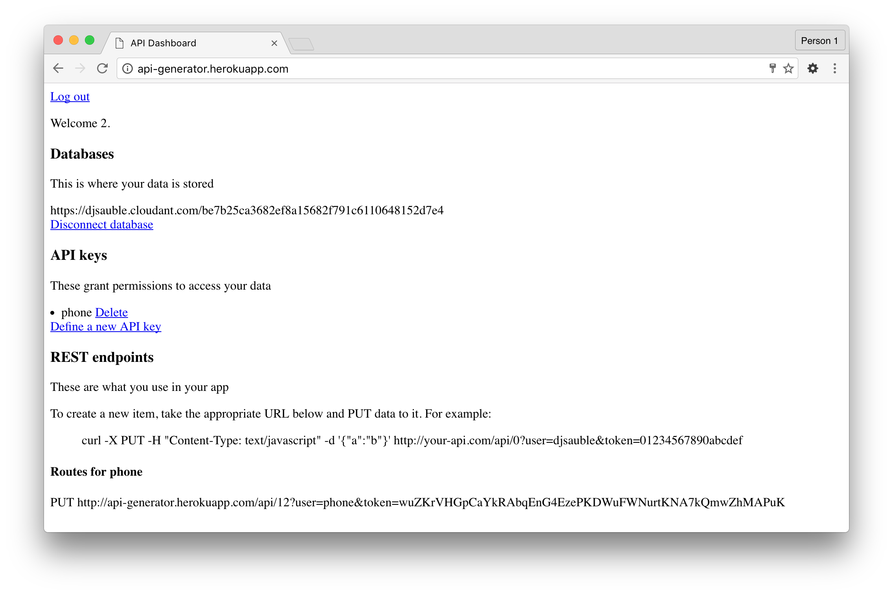
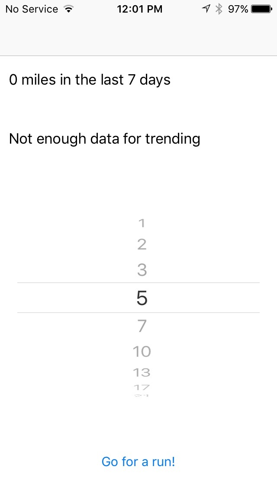
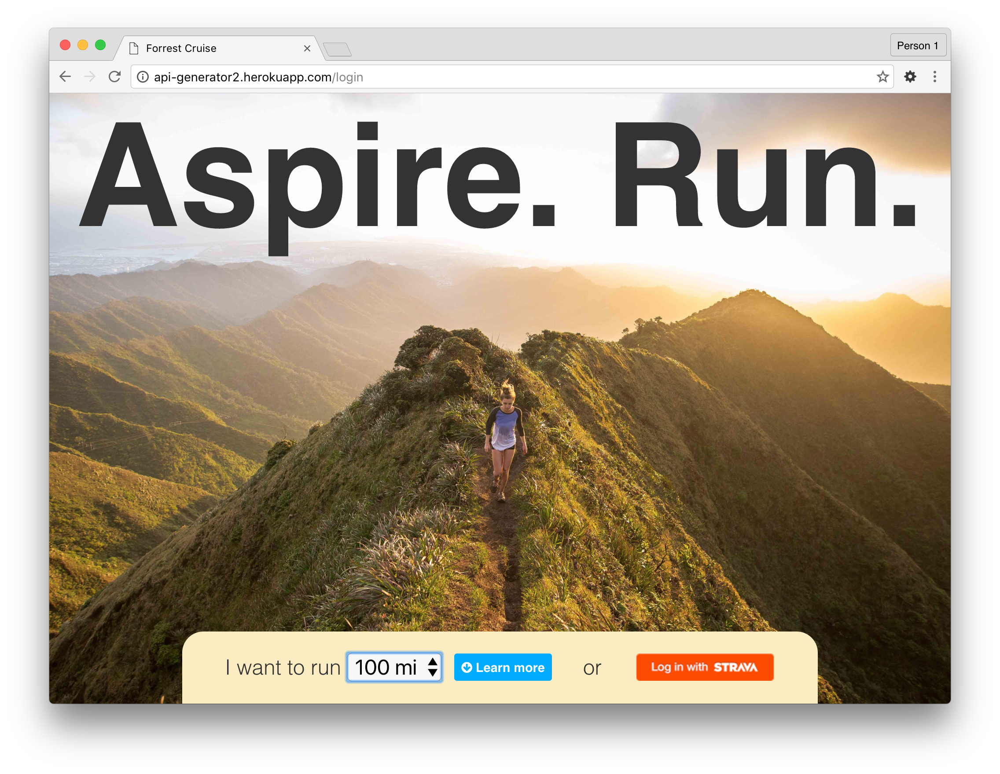
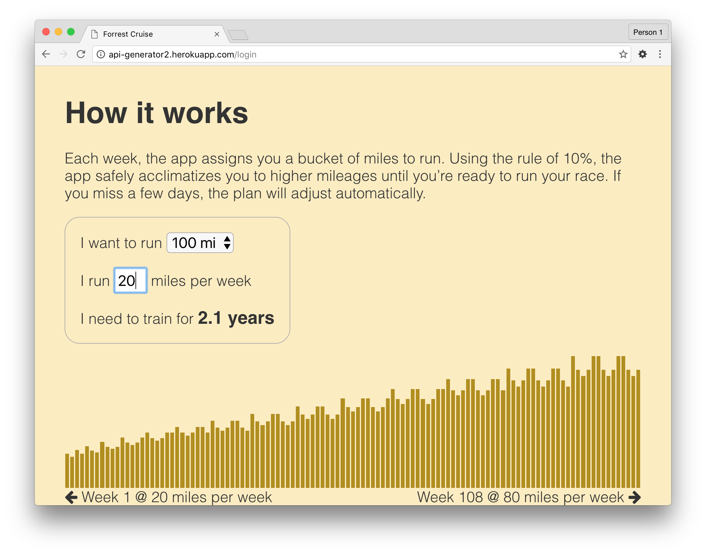
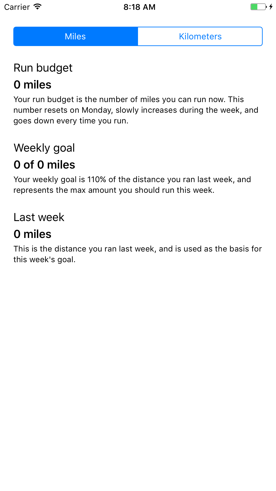
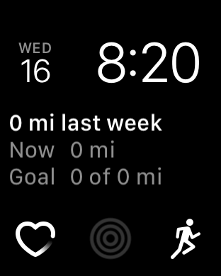

Run Budget
Back to home pageI am a runner. If you’re a recreational runner like me, you’ve never won a race, you’ve never been part of the Olympic team, and you’ve never won a medal. If you’re like me, running isn’t about being the best.
These are the things I care about as a runner:
- I want to avoid getting injured.
- I want to achieve a run or two on my bucket list.
- I want to be in great shape 20 years from now.
All of these are long-term things. To avoid injury, you need to stay consistent and avoid spikes in mileage over weeks, months, and years. To achieve a bucket list run, you need to build your base mileage slowly over months or years. To be in great shape 20 years from now, you need to stay motivated.
Building a base platform
I started by building a SAAS solution to store my runs. In retrospect, I could have used Strava or Garmin Connect as an out-of-the-box solution, but I wanted to own my data, and was wary of the control I would yield by giving it to a 3rd party API.
The initial service was written in Ruby, hosted on Heroku, with data stored in a CouchDB database. It supported multiple users, and persisted run data POSTed to its REST API.
With this basic service in place, I built an iOS app to record runs and submit them to the service. At this point, I had a way to persist run data and was ready to start designing the right solution for my problem.
Solution #1: Auto-suggested routes
The 10% rule is a time-established way to ensure that you don’t increase your base mileage too quickly. The traditional way to adhere to this rule is to write out a training plan, and adhere strictly to it. It takes discipline to map out your runs ahead of time to ensure that you follow your training plan precisely.
My first idea was to make this mapping process easier. To do this, I wrote an app telling people exactly where and how far they should run. Each time they went for a run, they would choose a distance, and the app would select an appropriate local route for them.
To do this, I used GIS data from Portland Metro to intelligently map routes, and used turn-by-turn directions to guide people through the route. This way, there was no need to train the app on your routes, since all the available routes were known beforehand.
In the screenshot below, black represents running trails, and green represents walking directions to the beginning of each segment. Again, I was able to generate all of this automatically.

There were a number of problems with this approach:
- It was annoying to be told where to run. I run to get away from electronics, and the app provided a constant reminder of this.
- Since there are only a handful of good routes in any given area, once I became familiar with an area (a month or two at most), I didn’t need turn-by-turn directions anymore.
- This approach required a large amount of data scraping ahead of time. As a one-person team, I don’ have the resources to build out a comprehensive database of all running routes in my metro area, let alone my state, country, or the world.
Solution #2: Goal setting
My second idea was to take the 10% rule and apply it to goals. If you know how much you run now, and how much you want to run in the future, it should be possible to automatically generate a running plan to get you there.
Again, I didn’t want to burden people with needing to create/maintain/adhere to a strict training plan. I used weeks as the unit of progress. Each week, I set a goal of 10% (or less) of the previous week’s mileage, showing past weeks to help people see how good they were doing at being consistent.
To visualize this information, I wrote a new web front-end in Backbone.js, and rewrote the backend in Node.js. This allowed me to share NPM modules between the front- and backend, and made the whole experience work much better.
On the landing page, I let people enter information about their running habits, and see the training it would require to achieve their goal.
Finally, I created a dashboard showing goal and trending information, along with a list of runs and a map showing individual routes. You can change your goal at any time, and the goal algorithm adjusts to help you slowly increase your mileage as needed.

As a final touch, I implemented a WebSockets API, allowing the iOS app and web dashboard can communicate with each other in real-time. If you submit a run from the app, it is immediately displayed in the dashboard and updates the trends/goals.
A screenshot of the iOS app is below. Red indicates total distance spent walking or running. Blue indicates running distance each week. Green indicates average pace each week (lower is better).

Unfortunately, I had to abandon this solution for a couple of reasons:
- People won't pay for a hosted solution to store their runs when they can get Strava, Nike+, or Garmin Connect for free, and I don’t have the financial resources to provide a free hosting solution that scales.
- Even though showing goal information is nice, it’s too high-level a solution to help people manage their training each week. This is what a training log does very well, and something my solution did not.
Solution #3: Run budgeting
I bought an Apple Watch Series 2 shortly after they came out. While playing with it, I realized that complications are the perfect way to managing training consistency. Since they’re always visible and unobtrusive, they’re the perfect way to understand what you should do next in your plan.
I created the concept of a running budget. A running budget is a number which helps you answer a simple question: ”if I went running right now, how far should I go?” It gives you the freedom to decide when and how much to run, without committing to an inflexible schedule. It’s the perfect thing to display in a complication.
Each Monday, your budget is reset. As the week progresses, it gradually increases. When you go for a run, it decreases by the amount you ran. The goal is to ensure your budget is zero by the end of the week.
If you consistently use your entire running budget, your mileage will increase 10% each week. You can adjust your rate of progress by varying the amount of budget left over at the end of each week.
Furthermore, WatchOS has HealthKit support, so you can consume data produced by other apps, without needing to generate or store it yourself. This was a perfect solution for the first problem in my previous attempt. Since I no longer needed to track runs or store the data, I was able to focus on the core problems.
The new iOS app is very simple, and consists solely of the following screen:
The complications are also quite simple. They range from a complication which shows your running budget, progress against your weekly goal, and last week’s mileage...
...to a very simple complication which only shows your running budget:

These complications all support Time Travel, so you can easily speed ahead and see how much budget you’ll have at various points throughout your day.
Summary
You can download the finished app from the App Store here . If you want to be a beta tester for upcoming features, please send me an email at djsauble@gmail.com.
Due to the long-term nature of the problems this app solves, it may be awhile before we know if a run budget is the right approach, but at the moment it feels closer than any approach thus far.
Back to home page